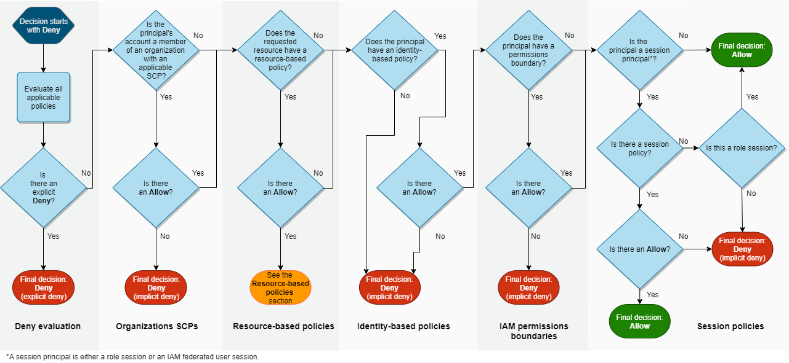

AWS Policy Evaluation Logic
Explain how AWS evaluates policies when a principal makes a request to access a resource.
Request Context
AWS processes the request to gather the following information into a request context:
- Principal – The user, role, federated user, or application that sent the request. Information about the principal includes the policies that are associated with that principal.
- Resources – The AWS resource object upon which the actions or operations are performed.
- Actions (or operations) – The actions or operations that the principal wants to perform.
- Environment data – Information about the IP address, user agent, SSL enabled status, or the time of day.
- Resource data – Data related to the resource that is being requested. This can include information such as a DynamoDB table name or a tag on an Amazon EC2 instance.
AWS processes the information gathered in the request to determine which policies apply to the request. Then evaluates the policies to determine whether the request is allowed or denied.
Policy Types
The following policy types, listed in order of frequency, are available for use within a single AWS account.
Identity-based policies – Identity-based policies are attached to an IAM identity (user, group of users, or role) and grant permissions to IAM entities (users and roles).
Resource-based policies – Resource-based policies grant permissions to the principal (account, user, role, and session principals such as role sessions and IAM federated users ) specified as the principal.
IAM permissions boundaries – Permissions boundaries are an advanced feature that sets the maximum permissions that an identity-based policy can grant to an IAM entity (user or role).
AWS Organizations service control policies (SCPs) – Organizations SCPs specify the maximum permissions for an organization or organizational unit (OU).
Session policies – Session policies are advanced policies that you pass as parameters when you programmatically create a temporary session for a role or federated user.
Policy Evaluation Logic Within the Same Account
When a principal sends a request to AWS to access a resource in the same account as the principal’s entity
A summary of the AWS evaluation logic for policies within a single account.
- By default, all requests are implicitly denied with the exception of the AWS account root user, which has full access.
- An explicit allow in an identity-based or resource-based policy overrides this default.
- If a permissions boundary, Organizations SCP, or session policy is present, it might override the allow with an implicit deny.
- An explicit deny in any policy overrides any allows.
flowchart that shows the detailed policy evaluation logic for requests within a single account.

Resource-based policies – Within the same account, resource-based policies impact policy evaluation differently depending on the type of principal accessing the resource, and the principal that is allowed in the resource-based policy. Depending on the type of principal, an Allow in a resource-based policy can result in a final decision of Allow, even if an implicit deny in an identity-based policy, permissions boundary, or session policy is present.
For most resources, you only need an explicit allow for the principal in either an identity-based policy or a resource-based policy to grant access. IAM role trust policies and KMS key policies are exceptions to this logic, because they must explicitly allow access for principals.
see Policy evaluation logic for more details.
Cross-account policy evaluation logic
the account where the principal exists is called the trusted account. The account where the resource exists is the trusting account.
To allow cross-account access, you attach a resource-based policy to the resource that you want to share. You must also attach an identity-based policy to the identity that acts as the principal in the request.